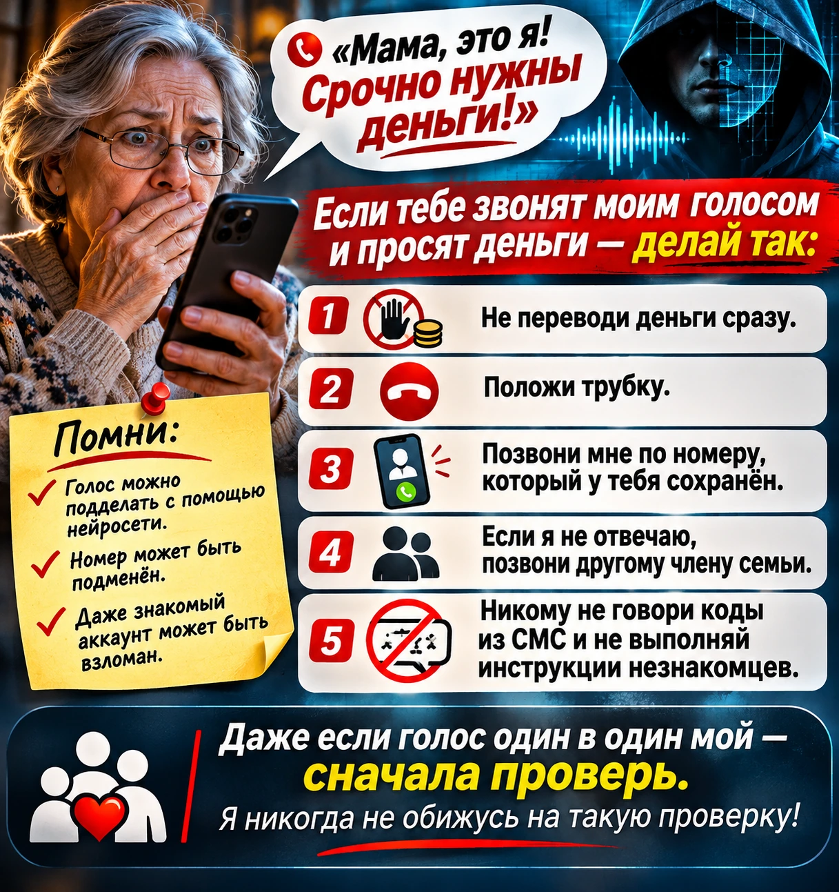

— Мам, это я. Только не пугайся. Я попал в аварию. Мне срочно нужны деньги.
Голос знакомый до мелочей: интонации сына, манера растягивать слова, даже привычная хрипотца. Следом — сумма, номер карты и просьба никому пока не звонить. «Потом всё объясню».
Так может начинаться мошеннический звонок с поддельным голосом. Пока человек пытается понять, действительно ли с близким случилась беда, его уже подталкивают к переводу. И здесь бесполезно полагаться только на слух: нейросети научились довольно убедительно имитировать человеческую речь.
Самое надёжное действие — прервать разговор и самостоятельно связаться с родственником по давно известному номеру. Вот как проверить звонок, что делать после перевода денег и о чём стоит договориться с семьёй заранее.
Если звонят прямо сейчас: первые 30 секунд
Не тратьте это время на поиски «металлических ноток» в голосе. Сначала остановите перевод.
- Не отправляйте деньги и не сообщайте коды из СМС. Даже если собеседник звучит в точности как ваш ребёнок, супруг или друг.
- Закончите разговор. Достаточно фразы: «Я сейчас сам тебе перезвоню». Не спорьте и не оправдывайтесь.
- Наберите близкого сами. Найдите его контакт в своей телефонной книге. Не используйте кнопку обратного вызова, номер из сообщения или контакт, который вам только что продиктовали.
- Если он недоступен, подключите другого человека. Позвоните его супругу, родителям, другу или коллеге по заранее известным номерам. Попробуйте другой привычный канал связи.
- Если сведения указывают на реальную угрозу жизни или здоровью, обращайтесь в экстренные службы. В России единый номер — 112. Расскажите диспетчеру, что именно вам известно, и не подменяйте такую проверку переводом неизвестному получателю.
Этот порядок рекомендуют Банк России и американская Федеральная торговая комиссия — FTC. Самостоятельный звонок важнее любых попыток угадать, настоящий ли голос.
Такое уже случалось: пример из сообщения МВД
24 января 2026 года официальный представитель МВД России Ирина Волк рассказала о случае, когда злоумышленник получил доступ к чужому аккаунту в мессенджере. Через него отправили голосовое сообщение, созданное с помощью нейросети, с просьбой перевести деньги через Систему быстрых платежей.
Получатель решил, что пишет его родная сестра, и отправил деньги мошенникам. Об этом сообщил портал «Объясняем.рф» со ссылкой на заявление представителя МВД.
В этом случае обман подкреплялся сразу двумя знакомыми вещами: голосом и аккаунтом. Оба признака оказались ненадёжными. При этом для такой схемы не обязательно взламывать переписку: образцы речи злоумышленники могут получать и из общедоступных записей.
Откуда мошенники берут голос и почему подделка звучит убедительно
Технологию обычно называют клонированием голоса. Нейросеть анализирует запись речи, а затем воспроизводит похожий тембр, произношение и интонации. Источником могут стать видеоролик из соцсети, публичное выступление или голосовое сообщение, полученное после взлома аккаунта.
FTC предупреждает, что для создания имитации иногда хватает короткого фрагмента аудио. Качество зависит от исходной записи и используемой модели, поэтому не каждая подделка звучит одинаково убедительно. Но преступникам и не требуется идеальная копия: им нужно, чтобы адресат поверил просьбе хотя бы на несколько минут.
Сценарий при этом старый. Родственник якобы попал в ДТП, находится в больнице или задержан. Он говорит сбивчиво, а затем передаёт трубку «врачу», «следователю» или «адвокату». Тот объясняет, куда перевести деньги и почему делать это нужно немедленно.
Срочность, секретность и требование перевести деньги прямо сейчас встречаются и в схемах без нейросетей. Поддельный голос просто делает прежнюю историю убедительнее.
Можно ли распознать ИИ-голос на слух?
Иногда подделку выдают странные паузы, непривычные ударения, ровная интонация или резкая смена тембра. Банк России упоминает такие признаки в рекомендациях по дипфейкам.
Но плохая связь тоже искажает голос. Реальный человек может плакать, задыхаться от волнения, говорить шёпотом или с чужого телефона. А качественная подделка может не содержать заметных дефектов.
Поэтому отсутствие странностей в голосе ничего не подтверждает. И наоборот, необычная речь сама по себе не означает обман. Не превращайте семейную беду в экзамен по распознаванию звука: личность и обстоятельства проверяются другим способом.
А если на экране настоящий номер родственника?
Отображаемое имя или номер тоже можно подделать — такая техника называется спуфингом. FTC прямо предупреждает, что мошенники могут заставить определитель показать чужой номер. Кроме того, преступники иногда пишут из реально взломанного аккаунта.
Входящий звонок со знакомого номера и самостоятельный исходящий звонок по сохранённому контакту — разные способы проверки. Если основной номер недоступен или есть основания подозревать взлом, воспользуйтесь другим каналом и свяжитесь с кем-то из близких.
Как проверить звонок, когда собеседник не даёт времени подумать
Перезвоните и проверьте обстоятельства
Положите трубку и сами наберите родственника. Если он ответил, спросите прямо, звонил ли он и требуется ли ему помощь. Не ориентируйтесь на ответ подозрительного собеседника вроде «У меня сел телефон, звонить нельзя».
Если говорят о больнице, уточните её название и свяжитесь с учреждением по номеру с официального сайта. Больница может не раскрывать сведения о пациенте, но вы сможете узнать порядок проверки информации. Если речь о ДТП, задержании или другом происшествии, выясняйте обстоятельства через близких и официальные службы, а не через реквизиты «посредника».
Подключите второго родственника
Когда сын не отвечает, легко решить, что это подтверждает страшную историю. На деле он может быть за рулём, на работе или просто не слышать телефон.
Позвоните человеку, который может с ним связаться. FTC отдельно советует обращаться к другим членам семьи и друзьям, даже если звонивший настойчиво требовал хранить всё в тайне. Иногда один разговор с родственником разрушает всю мошенническую легенду.
Задайте вопрос, ответ на который не лежит в соцсетях
Если сразу прервать разговор не получается, спросите о семейном событии, которое не обсуждалось публично. Но не подсказывайте ответ: «Это ты, Дима? Ты сейчас у Ксюши?»
Имя питомца, дата рождения и город учёбы часто доступны в открытых профилях. Мошенники могут заранее собирать личные сведения, поэтому даже правильный ответ требует независимого подтверждения.
Договоритесь о семейной кодовой фразе
Можно заранее придумать необычное сочетание слов для экстренных ситуаций. Обсудите его лично, не используйте известные даты и не оставляйте в общедоступных переписках.
Если собеседник не знает фразу, прекращайте разговор и связывайтесь с близким самостоятельно. Если знает — всё равно проверяйте неожиданную просьбу о крупной сумме: кодовая фраза тоже может утечь из переписки или стать известна посторонним.
Пять признаков, что вас пытаются заставить перевести деньги
Внимание стоит обращать прежде всего на действия собеседника.
- Ставит ультиматум по времени. «Через пять минут будет поздно», «переводи, пока не приехала полиция».
- Запрещает советоваться. «Не звони папе», «никому не говори, особенно маме».
- Просит деньги на чужие реквизиты. Например, «врачу», «адвокату» или неизвестному знакомому. Само по себе чужое имя не доказывает обман, но перевод требует независимого подтверждения.
- Просит коды, доступ к телефону или установку приложения. Так мошенники могут получить доступ к банковскому приложению и другим аккаунтам.
- Давит на чувство вины. «Если не веришь, значит, тебе всё равно», «ты меня бросаешь».
Один признак ещё не описывает всю ситуацию. Но при сочетании срочности, секретности и просьбы перевести деньги проверку нельзя пропускать — даже если история кажется правдоподобной.
Что делать, если вы уже отправили деньги мошенникам
Здесь счёт идёт на минуты. Чем раньше банк узнает о случившемся, тем больше шансов проверить возможность остановки операции или возврата средств.
Сначала — банк
Откройте банковское приложение самостоятельно или позвоните по номеру с карты либо официального сайта банка. Объясните без догадок, что произошло: вы сами подтвердили перевод под воздействием обмана или деньги списались без вашего согласия. Для банка это разные обстоятельства.
Назовите сумму, время, получателя, способ перевода. Попросите зарегистрировать обращение, проверить доступные способы возврата и дать номер заявки. Сохраните подтверждение обращения и переписку с банком.
Если вы сообщили код из СМС, пароль или реквизиты карты, немедленно скажите об этом банку. Если по просьбе звонившего установили приложение удалённого доступа, прекратите пользоваться таким устройством для банковских операций и свяжитесь с банком с другого, доверенного устройства. Потребуются меры защиты аккаунтов, а иногда — блокировка карты.
Перевод через СБП может поступить получателю практически сразу. Банк не может обещать отмену любого уже исполненного перевода, но сообщить о мошенничестве всё равно необходимо.
Затем — полиция и доказательства
Подайте заявление о мошенничестве в полицию. Сохраните чек, выписку, номер и время звонка, реквизиты получателя, сообщения, скриншоты и аудиозаписи, если они у вас есть. Не удаляйте исходную переписку до фиксации сведений.
Если мошенники действовали через аккаунт родственника, сообщите ему об этом отдельно: ему может понадобиться защитить свою учётную запись и предупредить других людей.
Обязан ли банк вернуть деньги?
Автоматического возврата любого перевода, который человек сам подтвердил мошеннику, закон не гарантирует. Важно выяснить, какую именно операцию провели и выполнил ли банк предусмотренные требования.
Банк России разъясняет, что по статье 9 закона № 161-ФЗ действуют правила возмещения денег, похищенных в результате операций без согласия клиента. Учитываются обстоятельства списания и действия владельца счёта. Если вы обнаружили именно несанкционированную операцию, уведомите банк незамедлительно; закон устанавливает для такого уведомления отдельные сроки.
Есть и важное правило для переводов, которые человек отправляет под влиянием мошенников. Если сведения о получателе уже были в базе Банка России о мошеннических операциях, а банк не приостановил перевод на два дня или не отказал в предусмотренной законом повторной операции, по разъяснению регулятора, банк обязан возместить похищенное. При этом, если банк предупредил об опасности и остановил операцию, а клиент всё равно настоял на переводе, регулятор указывает, что по этому основанию обязательного возмещения нет.
Поэтому не стоит заранее считать дело безнадёжным, но и обещаниям «вернём всё за сутки» верить опасно. Подайте официальное обращение, получите ответ банка; при споре можно обратиться за разъяснением в Банк России или за юридической помощью. Не платите посредникам за «гарантированную разблокировку» якобы найденных денег.
Как подготовить родителей и всю семью
Удобнее договориться о проверке заранее, когда никто никуда не торопится. Можно прямо сказать близким: «Если тебе позвонят моим голосом и попросят деньги, я хочу, чтобы ты сначала положил трубку и набрал меня сам. Я не обижусь».
Сохраните у родителей в телефонной книге номера хотя бы двух людей, которым они могут позвонить для проверки. Уточните, умеют ли они сами открывать нужный контакт, не пользуясь кнопкой обратного вызова. Обсудите семейную фразу и правило для крупных неожиданных переводов.
Полезно также ограничить публичный доступ к длинным голосовым записям, проверить защиту мессенджеров и включить двухфакторную аутентификацию там, где она доступна. Это снижает некоторые риски, но не делает голос недоступным для копирования: запись может находиться и у других людей.
«Вторая рука»: дополнительный контроль банковских переводов
В России действует банковский сервис «второй руки». Владелец счёта может назначить доверенного помощника, который подтверждает или отклоняет определённые переводы третьим лицам и операции по снятию наличных. Какие именно операции требуют согласования, определяют в соглашении с банком.
Помощник не получает права самостоятельно переводить деньги владельца счёта. Для подключения оформляют соглашение с банком; порядок подключения и некоторые условия зависят от кредитной организации. Сервис не распространяется на переводы между собственными счетами в разных банках.
Максимальный срок ответа помощника — 12 часов, если соглашением не установлен более короткий. Если ответа нет, банк отклонит операцию. Это может оказаться полезной паузой при мошенническом звонке, но услуга не заменяет разговоры в семье и не защищает от всех видов обмана.
Подключать такую проверку лучше по договорённости с самим владельцем денег. Смысл — дать ему время на проверку, сохранив контроль над собственными средствами.
Что делать, если мошенники использовали ваш голос
Друг сообщает, что получил от вас просьбу занять денег голосовым сообщением. Даже если ваш телефон при вас, отреагировать стоит сразу.
Предупредите близких и коллег по своим обычным каналам: от вашего имени приходят подозрительные просьбы, никаких переводов без проверки делать нельзя. Попросите переслать вам скриншоты и сохранить сообщение как доказательство.
Дальше выясните, откуда пришло сообщение. Если с вашей настоящей учётной записи — проверьте активные сеансы, завершите неизвестные подключения, смените пароль с доверенного устройства и включите дополнительную защиту входа. Если кто-то создал отдельный поддельный профиль, отправьте жалобу площадке и сообщите знакомым, чтобы они его не принимали за ваш.
Не загружайте приватные записи близких в случайные сайты, обещающие мгновенно «вычислить нейросеть». Сначала убедитесь, кто владеет сервисом и что происходит с загруженным голосом.
Частые вопросы о поддельных звонках
Можно ли скопировать голос из обычного голосового сообщения?
Да. Короткий фрагмент речи может подойти для клонирования, хотя качество подделки будет зависеть от записи и программы. FTC описывает такой риск и для аудио, опубликованного в интернете.
Поможет ли приложение для обнаружения дипфейков?
Такие инструменты существуют, но их результат зависит от качества звука, шума и способа создания подделки. Для срочного решения о переводе денег проверка личности через заранее известный контакт практичнее, чем попытка получить технический вердикт по записи.
Если звонок пришёл с сохранённого номера, можно доверять?
Нет оснований делать вывод только по номеру на экране: его могут подделать. А знакомый аккаунт в мессенджере иногда оказывается у злоумышленников. Завершите подозрительный разговор и установите связь сами.
А если родственник появился по видеосвязи?
Видео тоже можно подделывать. Короткий ролик с лицом знакомого человека — повод внимательно проверить просьбу, особенно если речь идёт о деньгах. Банк России предупреждает и о видеодипфейках с финансовыми просьбами.
Можно ли обойтись одним секретным словом?
Кодовая фраза помогает, если о ней договорились заранее и она не стала известна посторонним. Но крупную неожиданную просьбу лучше дополнительно подтвердить обратным звонком или через другого члена семьи.
Памятка для родителей: можно сохранить и переслать

Если тебе звонят моим голосом и просят деньги:
- Не переводи ничего сразу.
- Положи трубку.
- Позвони мне по номеру, который у тебя сохранён.
- Если я не отвечаю, позвони другому члену семьи.
- Никому не говори коды из СМС и не выполняй указания незнакомцев.
Даже если голос один в один мой — сначала проверь. Я никогда не обижусь на такую проверку.
Источники и полезные инструкции
- Банк России — мошенничество с дипфейками и проверка личности.
- Банк России — вопросы информационной безопасности, возврат денег и условия возмещения.
- Банк России — как работает сервис «второй руки».
- FTC — как мошенники подделывают голоса членов семьи.
- FTC — проверка экстренных просьб и действия после перевода.
- FTC — почему нельзя доверять определителю номера.
- «Объясняем.рф» — сообщение представителя МВД о голосовом мошенничестве, 24 января 2026 года.
- МЧС России — единый номер вызова экстренных служб 112.